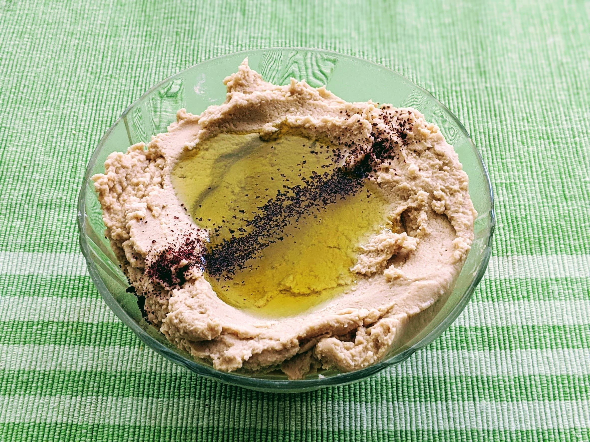

..@..♦.D.

|
Présentation 
|
Blog
|
Recettes
|

Pour un petit saladier de houmous (6-8 personnes, facile) :
Remarque : ça arrive que le mixeur ne parvienne pas à mixer les pois chiches lorsque ça devient trop pâteux — ajouter simplement un peu de jus de cuisson et ça devrait se débloquer.
Variante : si on veut être plus fancy, on peut faire ça avec des pois chiches secs que l'on fait tremper une nuit, puis que l'on fait cuire environ une heure et demie (jusqu'à ce qu'ils soient suffisamment ramollis pour pouvoir être écrasés avec les doigts facilement). C'est encore meilleur si l'on enlève les petites peaux transparentes autour de chaque pois chiche, la meilleure méthode que je connais pour ça est de frotter ensemble les pois chiches au fond d'une casserole d'eau froide, et de récupérer les petites peaux qui flottent à la surface. Pas besoin de s'embêter à tout enlever minutieusement, l'idée est de réduire leur quantité, pas de les éliminer complètement.